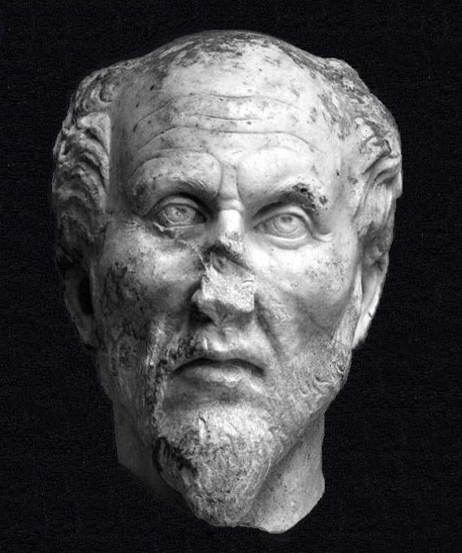
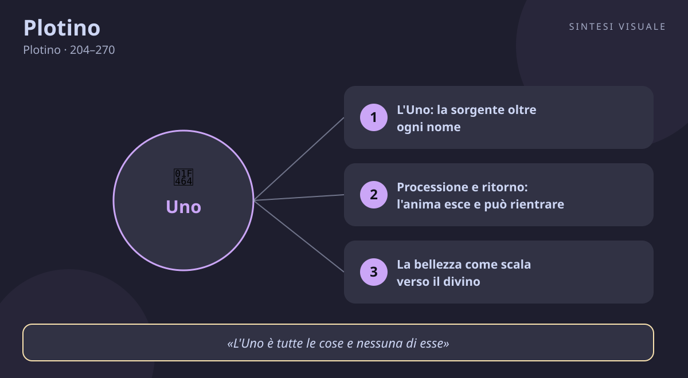

Plotino
Plotino · 204–270
«Non cessare mai di scolpire la tua statua»
- Statua interiore
- Anima
- Bellezza
- Virtù
💬La massima
«Non cessare mai di scolpire la tua statua.»
— Plotino, Enneadi, I, 6, 9 (il trattato Sul bello; in greco l'invito a lavorare su di sé «come lo scultore della statua che deve diventare bella»)
Il passo completo dice così: fa come lo scultore di una statua che deve diventare bella — toglie qui, raschia là, leviga e lucida finché dal marmo non emerge un bel volto; anche tu «togli il superfluo, raddrizza ciò che è storto, lucida ciò che è opaco perché sia brillante, e non cessare mai di scolpire la tua statua, finché in essa non splenda il divino splendore della virtù».
Questa frase è il cuore pratico di tutta la filosofia di Plotino. Per lui il male, la bruttezza e l'infelicità non sono sostanze che ci possiedono, ma incrostazioni: come il marmo grezzo nasconde già la statua, così l'anima è già bella per natura perché viene dal divino, ma si è coperta di strati — paure, avidità, rancori, abitudini pigre — che la rendono irriconoscibile. Educarsi, allora, non significa aggiungere pezzi (un titolo in più, un vestito nuovo, un like in più), ma togliere: liberare la forma che è già lì.
La parte più rivoluzionaria è il «mai»: scolpirsi non è un corso con attestato finale, ma il lavoro di una vita. Ogni giorno il marmo si riforma — una delusione ci indurisce, una fretta ci deforma — e ogni giorno lo scalpello deve tornare in mano. Ma c'è anche una promessa: nessuno è un blocco senza speranza, perché la bellezza da liberare è già dentro, e ogni colpo ben dato resta.
👤Biografia
Plotino nasce a Licopoli, in Egitto, intorno al 204 dopo Cristo, in un impero romano ormai vastissimo e inquieto. Della sua infanzia e della sua famiglia non sappiamo quasi nulla, e non per caso: lui stesso non ne parlava mai, e il biografo Porfirio racconta che «sembrava vergognarsi di essere in un corpo». A ventotto anni, ad Alessandria, trova finalmente il maestro che cercava, Ammonio Sacca, e resta con lui undici anni.
A quarant'anni tenta un'avventura straordinaria: si unisce alla spedizione dell'imperatore Gordiano III verso la Persia, sperando di conoscere la sapienza dell'Oriente. L'impresa fallisce — l'imperatore viene ucciso — e Plotino fugge ad Antiochia, poi si stabilisce a Roma intorno al 244. Qui tiene una scuola frequentata da senatori, medici e letterati, sotto la protezione dell'imperatore Gallieno e di sua moglie Salonina: sogna persino di fondare una città di filosofi, Platonopoli, ma il progetto sfuma tra gli intrighi di corte.
Di carattere era dolcissimo e riservatissimo: vegetariano sobrio, dormiva poco, curava con dedizione gli orfani affidati alla sua tutela e meditava in continuazione. Rifiutò di posare per un ritratto — «non basta l'immagine con cui la natura ci ha rivestiti?» — tanto che un allievo dovette farglielo fare di nascosto da un pittore. Porfirio racconta che quattro volte, mentre era con lui, Plotino raggiunse in estasi l'unione con il principio divino. Vecchio e malato, si ritirò in Campania, dove morì intorno al 270, a sessantasei anni; le sue ultime parole, secondo la tradizione, furono un invito a «ricondurre il divino che è in noi al divino che è nell'universo».
📌Sintesi del pensiero
Tutto deriva dall'Uno, principio assoluto al di là dell'essere e del pensiero, da cui traboccano — senza che l'Uno perda nulla — l'Intelletto (il mondo delle Idee, la verità eterna) e l'Anima (che plasma il cosmo e dà vita ai corpi). La nostra anima viene da lassù ma si è dimenticata della sua origine, affascinata dalle cose esteriori; il male non è una forza nemica, ma assenza e privazione, come il buio è assenza di luce. La salvezza è il ritorno: purificarsi con la virtù, contemplare con la filosofia, unirsi all'Uno nell'estasi. Conoscere il vero significa allora diventare veri.
🏛️I temi fondamentali
- L'Uno: la sorgente oltre ogni nome. Immaginate una sorgente in cima a una montagna: i torrenti scendono a valle senza che la sorgente si svuoti, e l'acqua resta la stessa dal ghiacciaio al mare. Così l'Uno genera tutto — Intelletto, Anima, mondo — restando intatto e indicibile: non è «una cosa tra le cose», ma il perché c'è qualcosa invece del nulla. Esempio concreto: quando dite «questa musica mi riempie senza che io sappia spiegare perché», state sfiorando l'idea di Plotino — ciò che conta di più è spesso ciò che non si lascia definire.
- Processione e ritorno: l'anima esce e può rientrare. Ogni realtà viene dall'alto e desidera risalire: come un raggio di sole che vorrebbe tornare al sole, l'anima umana sente nostalgia della sua patria divina. La caduta non è una colpa da punire ma una distrazione da correggere: ci siamo persi dietro specchietti — carriera, apparenze, possessi — e abbiamo dimenticato la strada di casa. Esempio concreto: la crisi di chi «ha tutto» — lavoro, casa, stipendio — eppure si sente vuoto è, in termini plotiniani, l'anima che ha esaurito le distrazioni e ricomincia a sentire la nostalgia dell'alto.
- La bellezza come scala verso il divino. Un bel volto, una bella melodia, un bel gesto non sono piaceri superficiali: sono tracce della stessa Bellezza che abita l'Intelletto divino, e riconoscerla nelle cose ci allena a riconoscerla dentro di noi. Per questo la statua va scolpita: diventare belli dentro significa diventare capaci di vedere il bello fuori. Esempio concreto: chi impara davvero un'arte — suonare, cucinare, potare un giardino — scopre che l'esercizio affina non solo le mani ma lo sguardo: dopo mesi di pratica, vede sfumature che prima non esistevano, perché è cambiato lui, non il mondo.
- Il male come privazione: il buio non esiste, manca la luce. Plotino nega che il male sia una potenza oscura in lotta con il bene: il male è mancanza, come la ruggine è mancanza di integrità nel ferro o il freddo è mancanza di calore. Questo cambia tutto sul piano pratico: contro il male non si combatte come contro un esercito, ma si «riempie» come si illumina una stanza — con più essere, più virtù, più consapevolezza. Esempio concreto: un ambiente di lavoro avvelenato da pettegolezzi non si risana con censure e punizioni, ma introducendo pratiche positive — riconoscimenti sinceri, obiettivi condivisi — che tolgono ossigeno al marcio.
- Virtù come purificazione ed estasi come meta. Le virtù — temperanza, coraggio, giustizia, saggezza — non sono medaglie da esibire ma detergenti dell'anima: ogni atto virtuoso toglie un'incrostazione e ci rende più leggeri, finché la contemplazione diventa possibile e, al culmine, l'io si dissolve per un istante nell'Uno in un'esperienza di unità totale. Non è fuga dal mondo: chi è risalito torna a occuparsi delle cose terrene, ma senza esserne più schiavo. Esempio concreto: il volontario che dopo anni di servizio dice «ricevo più di quanto do» descrive esattamente questo: agendo per gli altri si è purificato dai propri calcoli, e ora opera con una libertà che il semplice stipendio non compra.
📚Le opere principali
- Enneadi (I–VI, 54 trattati scritti tra il 253 e il 270, ordinati e pubblicati dal discepolo Porfirio dopo la morte del maestro). Non un libro progettato a tavolino, ma la raccolta delle lezioni e degli scritti di una vita, divisi in sei gruppi di nove: da qui il nome greco Enneadi, «novene». Tesi centrale: tutto deriva dall'Uno e tutto è chiamato a farvi ritorno, e la filosofia è l'arte di questo viaggio. Conta perché è l'ultima grande sintesi del pensiero antico e il ponte tra la filosofia greca e il pensiero medievale, cristiano e islamico.
- Sul bello (Enneade I, 6). Il trattato da cui è tratta la massima di oggi: contro chi riduce la bellezza a proporzione e simmetria esteriore, Plotino mostra che il bello è splendore dell'anima e dell'Idea nelle cose, e che solo un'anima purificata lo riconosce. Tesi centrale: per vedere il bello bisogna diventare belli. Conta perché fonda duemila anni di estetica — da Agostino a Schiller — e perché contiene l'invito più celebre della filosofia antica a lavorare su di sé.
- Contro gli gnostici (Enneade II, 9). Una polemica serrata contro i pensatori che disprezzavano il mondo materiale come opera di un dio malvagio: Plotino difende la bontà del cosmo, che pur imperfetto resta immagine vivente dell'Intelletto divino. Tesi centrale: il mondo non è una prigione da maledire ma una casa da abitare bene in attesa del ritorno. Conta perché chiarisce la differenza tra spiritualità sana e disprezzo del mondo — distinzione attualissima in ogni epoca di sette e catastrofismi.
- Sull'immortalità dell'anima (Enneade IV, 7) e Sull'Uno (Enneade VI, 9). Due vertici speculativi: il primo dimostra che l'anima, essendo principio di vita e di conoscenza, non può dissolversi con il corpo; il secondo descrive l'ascesa finale fino all'unione estatica, la «fuga del solo verso il Solo». Tesi centrale: siamo immortali nella parte migliore di noi, e il culmine della vita è ricongiungersi alla sorgente. Contano perché offrono la risposta più alta dell'antichità pagana alle domande su morte e destino — la stessa che conquisterà Agostino.
💬Massime celebri
«Fuga del solo verso il Solo» — Enneadi, VI, 9, 11 (in greco: phygē monou pros monon; è l'ultima riga dell'intera opera). Conta perché condensa in cinque parole tutto il cammino: spogliarsi di ogni compagnia esteriore per ritrovare, nella solitudine interiore, l'unione con l'assoluto.
«L'Uno è tutte le cose e nessuna di esse» — Enneadi, V, 2, 1. Conta perché esprime con un paradosso il cuore della metafisica plotiniana: la sorgente contiene in potenza ogni realtà, ma non si identifica con nessuna, restando libera e trascendente.
«Se l'occhio non fosse divenuto simile al sole, non potrebbe mai vedere il sole» — Enneadi, I, 6, 9. Conta perché è la legge d'oro della conoscenza secondo Plotino: si comprende solo ciò a cui si è diventati simili — per giudicare i generosi bisogna esercitare la generosità, per vedere il bello bisogna farsi belli.
⌛Contesto storico
Plotino vive nel secolo più drammatico di Roma antica: la crisi del terzo secolo. Quando nasce, intorno al 204, l'impero è ancora quello dei Severi, vasto e ricco; mentre cresce e insegna, tutto crolla: in cinquant'anni si succedono oltre venti imperatori, quasi tutti generali portati al potere dalle legioni e assassinati dopo pochi mesi. Le frontiere cedono sotto i goti e i persiani, la peste decima le città, la moneta si svaluta e le campagne si spopolano. La gente ha paura e cerca salvezza nelle religioni orientali, nei culti misterici, nell'astrologia e nella magia.
Roma resta però una metropoli cosmopolita di quasi un milione di abitanti: senatori colti e raffinati frequentano la scuola di Plotino, mentre per le strade predicano cristiani — ancora perseguitati a ondate — e gnostici di ogni setta. La cultura dominante è un misto di stoicismo pratico, retorica vuota e scetticismo stanco: la filosofia sembra ridotta a consolazione privata. Plotino la restituisce alla sua altezza, rileggendo Platone con una profondità mai vista e dialogando con Aristotele — di cui usa la logica ma rifiuta l'idea di un dio che pensa solo sé stesso — e con gli stoici, di cui ammira l'etica ma non il materialismo.
I movimenti che lo formano sono il medioplatonismo di Alessandria, l'insegnamento misterioso di Ammonio Sacca e la spiritualità orientale che intravide nella spedizione persiana; quelli che trasmette sono immensi: il neoplatonismo dei successori Porfirio, Giamblico e Proclo, la teologia cristiana di Agostino e dello Pseudo-Dionigi, la mistica medievale, il Rinascimento di Marsilio Ficino, e fino all'idealismo tedesco e oltre.
🌊L'eredità
Senza Plotino, Sant'Agostino — che lesse le Enneadi in traduzione latina — non avrebbe superato il materialismo e forse non si sarebbe convertito: concetti come il male-privazione e l'interiorità dell'anima passano da Plotino direttamente nelle Confessioni. Attraverso Agostino e lo Pseudo-Dionigi, Plotino diventa il maestro nascosto di tutto il Medioevo cristiano, da Eriugena a Meister Eckhart, e del pensiero islamico ed ebraico. Nel Rinascimento Marsilio Ficino lo traduce per intero in latino e ne fa la bibbia dell'umanesimo: la Cappella Sistina e l'amor cortese colto respirano aria plotiniana. Nell'Ottocento Schelling e Hegel vedono in lui il padre della dialettica dello Spirito, Schopenhauer lo ammira, Bergson ne riprende lo slancio e l'intuizione. Nel Novecento la psicologia del profondo — Jung e l'idea di individuazione come scultura del Sé — e persino la cultura del lifelong learning ripetono senza saperlo il suo invito: non smettere mai di scolpire la tua statua.
🌍Esempi di oggi
- Il corso serale dopo i quarant'anni. Un impiegato che ogni sera, tornato dal lavoro, studia un'ora di programmazione o di inglese sta scolpendo la sua statua: non aggiunge un trucco esteriore, ma toglie un'incrostazione — il «non sono più in età» — e libera una forma che era già in lui. La massima in azione: ogni ora di studio è un colpo di scalpello, e tra un anno lo specchio interiore mostrerà un volto diverso.
- La dieta digitale della domenica. Una famiglia decide che la domenica i telefoni restano in un cassetto: all'inizio le mani prudono, i ragazzi protestano, poi riemergono conversazioni, passeggiate, noia fertile. Hanno tolto il superfluo — il rumore — e lucidato l'opaco: la bellezza dello stare insieme era già lì, coperta dalle notifiche. La massima in azione: a volte scolpire significa sottrarre, non comprare.
- Il collega difficile e la purificazione. Un caporeparto ha un collaboratore polemico che avvelena le riunioni: invece di dichiarargli guerra, comincia a lodarlo sinceramente quando lavora bene e a ignorare con calma le provocazioni. In tre mesi il clima cambia — non perché il collega sia stato «sconfitto», ma perché il capo ha raddrizzato ciò che era storto in sé (la reazione automatica) e tolto ossigeno al marcio. La massima in azione: la virtù come detergente funziona anche in ufficio.
📄
# Plotino — «Non cessare mai di scolpire la tua statua»
Buongiorno! Oggi incontriamo il filosofo che insegnò a Roma che dentro ognuno di noi dorme una statua bellissima e che vivere significa scolpirla: un egiziano riservatissimo che si vergognava persino di avere un corpo, non raccontò mai nulla della sua famiglia e rifiutò perfino di posare per un ritratto, eppure tenne una scuola frequentatissima da senatori, medici e imperatori. Il ritratto qui sopra — la testa marmorea di Ostia antica, una delle poche immagini antiche identificate come Plotino — lo mostra anziano, calvo, con la fronte aggrottata e lo sguardo assorto di chi guarda più dentro di sé che fuori.
🧠Quiz
1 Cosa significa «non cessare mai di scolpire la tua statua»?
2 Che cos'è l'Uno per Plotino?
3 Che cos'è il male secondo Plotino?
4 Quale di questi fatti biografici su Plotino è vero?
5 Chi fu maggiormente influenzato da Plotino tra questi?
Rispondi in chat con es. «Quiz Plotino: 1B 2A 3C 4D 5A» (usa - per le risposte che salti).
✅Soluzioni — tocca per vedere
1B – 2C – 3C – 4B – 5A
🔁Ripasso
- Statua e purificazione: educarsi è togliere, non aggiungere — vizi e abitudini pigre sono incrostazioni sul marmo, e la virtù è lo scalpello che libera la forma interiore.
- Uno, processione e ritorno: tutto trabocca dall'Uno senza impoverirlo, e l'anima è chiamata a risalire la stessa strada — caduta come distrazione, salvezza come ricordo.
- Male come privazione: il male non è una potenza nemica ma assenza di bene; lo si vince riempiendo di essere e virtù, non solo combattendo il marcio.
🖼️In un colpo d’occhio

Tocca l’immagine per ingrandirla.